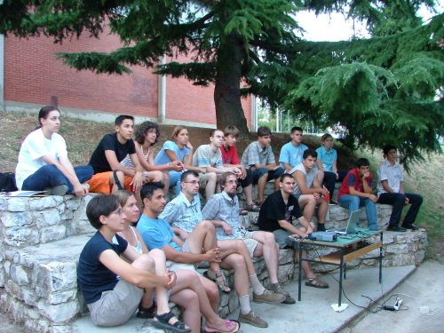

Day-to-Day Activities
What does a typical day at the Summer School of Science look like?
Depending on the project, you will either stay in the school or go to do terrain work. Project work is directed by your mentor. It usually starts at 9 AM and finishes at 6 PM. Most of the work will be done during the day, but night field trips or lab visits are not excluded. Every evening, there is at least one lecture or a workshop attended by all the participants together.
One day is reserved for the excursion. Except for a short break after lunch, don't expect too much free time.
 What is it like to be on the Summer School of Science?
What is it like to be on the Summer School of Science?
A lot of fun, if you like science. It can also be pretty usefull, if you plan to study science at the university. You usually learn basic concepts of science in school - about acids in chemistry, about electricity in physics or about genes in biology. This is certainly important for your education, but you are missing a critical part - the scientific method.
How do we ask questions about the phenomena in nature? How do we answer them? And how can you be sure about what you've found? The Summer School of Science is the place to learn all about it. Since we believe that the best way to learn is by example and practice - we'll put you in the position of the scientist. You will work on a very specific topic with a project leader and usually two other participants.
Do I have to know a lot about the topics in advance?
At this stage you should not worry weather you know enough science to do it. Science is so specialized nowadays that often you have to start from zero. But what is important: do you know how to learn? If you can do it in the school, you can certainly do it here. In any case, project leader is there to answer all your questions.What kind of people come to the Summer School of Science?
 The Summer School of Science is a unique place because you can meet other high school students with interests in science. You will also meet lots of people who work in applied or fundamental sciences. Some of them are your project leaders, others are lecturers. Working with some of them you will learn another thing about science - it is about people. You have to be able to work in the team, present and share your ideas, but in the same time listen and respect the others.
The Summer School of Science is a unique place because you can meet other high school students with interests in science. You will also meet lots of people who work in applied or fundamental sciences. Some of them are your project leaders, others are lecturers. Working with some of them you will learn another thing about science - it is about people. You have to be able to work in the team, present and share your ideas, but in the same time listen and respect the others. And when it comes to communication - you will have to practice that as well. You will have several chances to present your work and results.
Why is English the official language?
Because today it is practically official language of science. Most of the scientific literature is written in English, and most of the communication at conferences or summer schools happens in English. If you choose to study chemistry, biology or physics you will have to use textbooks written in English very early. So this is a good way to start. Don't worry if your English is not perfect, if you can communicate and express you ideas- it is enough!
Copyright © 2014 Society for Out of Frame Education. All Rights Reserved.
Webdesign: Martina Mijuskovic. General text: Branimir Lukic and Martina Mijuskovic. Croatian translation: Matilda Males.